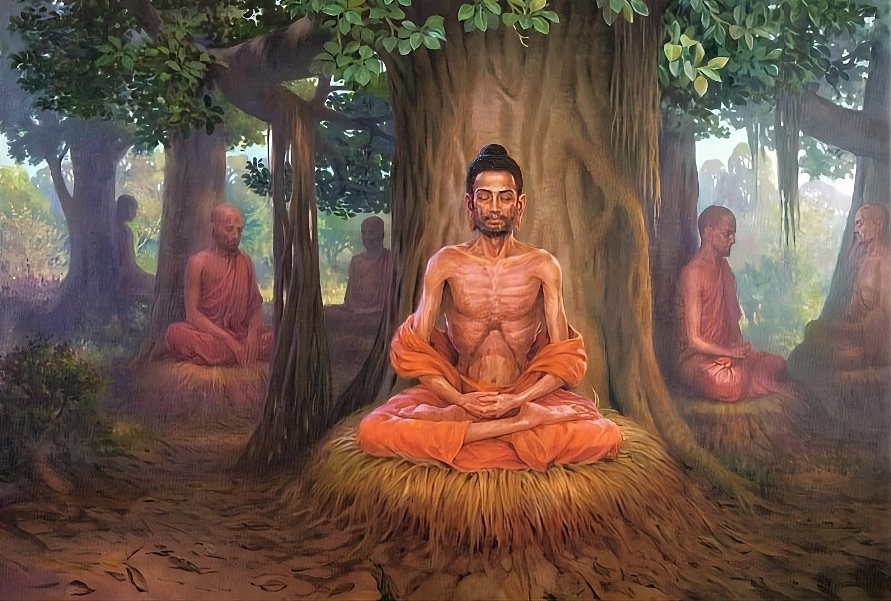

Namo tassa bhagavato arahato sammāsambuddhassa
Homage to the Most Venerable One, the Arhat, the Self-Awakened One
Namo tassa bhagavato arahato sammāsambuddhassa
Homage to the Most Venerable One, the Arhat, the Self-Awakened One
Namo tassa bhagavato arahato sammāsambuddhassa
Homage to the Most Venerable One, the Arhat, the Self-Awakened One
Sabbapāpassa akaraṇaṃ,
Do no evil
Kusalassa upasampadā ;
Accumulate good things
Sacitta pariyo dapanaṃ,
Encourage your mind to comprehend
Etaṃ buddhāna sāsanaṃ
This is Buddha's teaching.
Severe Asceticism in Uruvela
After leaving his teacher Udaka, the Bodhisatta continued to wander throughout Magadha, still intent on Nibbana, and eventually arrived at the trading town of Sena. Not far from Sena was the forest of Uruvela. The forest was an excellent place for noble and virtuous people seeking liberation from suffering. The Neranjara River had an attractive bathing place, free from mud and dirt, with a sandy bank, with clear and transparent waters full of fish and turtles, and the river flowed continuously. There were also small villages where forest ascetics could easily obtain food as alms. Seeing all these features, the Bodhisatta examined them carefully and decided, “This is an ideal place for the sons of noble families seeking Nibbana to engage in practice.” He built a small dwelling out of the dry sticks and leaves available and stayed in the forest of Uruvela to engage in meditation.
Then three thoughts arose in the Bodhisattva's mind:
1. To make a fire, no matter how hard a person rubs a stick, a large wet fig log soaked in water, he will not be able to make a fire and will only become unhappy. In the same way, in this world, the so-called ascetics and brahmins in whom the wet and slippery elements of sensual passion have not dried up and who do not turn away from sensual objects (that is, have not developed renunciation to the proper degree) will also not be able to realize the paths and fruits, but will only become unhappy, no matter how hard they work to rid themselves of defilements. This was the first thought that occurred to the Bodhisatta.
As the comment explains:
In this reflection, those in whom the slippery elements of sensual passion have not dried up are likened to a large wet fig-wood log. The action of holding oneself in the water of sense objects is likened to the action of holding a piece of wet fig-wood in water. Failure to obtain fire or knowledge of the path, however hard they may work without giving up sense objects, is likened not to kindling a fire but to the arising of suffering, however hard one rubs a large wet fig-wood log soaked in water. This parable symbolizes the asceticism of those wandering ascetics who, although they have gone into the forest, have gone only for a time and for whom, somewhere, home life with wife and children awaits (saputta-bhariyā-pabbajjā).
2. To make a fire, no matter how hard a person rubs a stick, a piece of wet wood lying on the ground far from water, he will still not be able to make a fire because of the dampness of the wood; instead, he will only become unhappy. In the same way, in this world, the so-called ascetics and brahmins, in whom the slippery elements of sensual passion have not dried up, will not be able to realize the paths and fruits, but will only become unhappy, no matter how hard they work, physically and mentally moving away from the water of sensual objects. This was the second thought that occurred to the Bodhisattva.
In this parable, those in whom the slippery elements of sensual passion have not dried up are likened to a piece of wet fig wood. Failure to obtain the fire of knowledge of the path, no matter how hard they work, withdrawing from the sense objects both physically and mentally, is likened to the failure to kindle a fire, but to suffering arising instead of fire due to the dampness of the wood, no matter how hard one rubs a piece of wet fig wood lying on the ground far from water. This parable symbolizes the asceticism of those brahmins who have renounced worldly life and who, leaving their wives and children (brāhmaṇa-dhammika-pabbajjā), devote themselves to wrong practice (pāsaṇḍa) .
3. To make a fire, when a man rubs a stick, a large dry log, lying on the ground far from water, he can easily make a fire, since the wood lies on the ground far from water and is itself dry. In the same way, in this world, those who are called ascetics and brahmins, in whom the moist and slippery elements of sensual passion have been destroyed and who renounce sensual objects both physically and mentally, can realize the paths and fruits when they practice the right ascetic teaching, whether with difficulty or with ease. This was the third thought that appeared to the Bodhisatta.
This parable symbolizes the asceticism of the Bodhisatta himself.
Group of five
The five-member group of hermits (pañca-vaggiya), who had begun the ascetic life immediately after the Bodhisatta's birth, inquired whether Prince Bodhisatta had renounced the world and become a hermit. On hearing that he had indeed become a hermit, they began visiting villages, trading posts, and other places, one after another, in search of the Bodhisatta, and finally found him in the Uruvela forest. They had strong hopes: "Very soon he will become a Buddha! Very soon he will become a Buddha!" and took care of the Bodhisatta, who was engaged in austere aspiration (dukkara-cariyā) for six years. They followed him, performing their duties, such as sweeping the place, preparing hot and cold water, and so on.
The Bodhisattva's Efforts
Strict aspiration of fourfold determination:
1) "Let only the skin remain!"
2) "Let only the sinews remain!"
3) "Let only the bones remain!"
4) "Let the flesh and blood dry!"
Called strenuous effort (padhāna-viriya). The practices that will be mentioned below are called labors of effort (padhāna), because they are performed with strenuous effort. They are also called rigorous striving (dukkara-cariyā), because they are difficult for ordinary people to perform.
The first paragraph below is from the Ornament of the Conqueror (Jinālaṅkāra); the next six paragraphs are from the Long Teaching on Saccaka (Mahā-saccaka-sutta, MN 36).
Coming to the trading post of Senā to beg, the Bodhisatta spent many days practicing meditation for the development of goodwill (mettā-bhāvanā), and then it occurred to him: “What benefit will it bring me to depend on this coarse and hard food, swallowed in pieces? By eating such food to satiety and developing loving-kindness, I shall not attain omniscience, which is my goal.” He therefore gave up food obtained on alms and began to support himself by eating the large and small fruits that fell from the trees in the Uruvela forest. Not achieving success in this way either, he thought, “This food of large and small fruits is still coarse. Seeking fruits is also a hindrance (paḷibodha).” Accordingly, he began to support himself only on the fruits that fell from the tree under which he took refuge.
The Bodhisatta then thought, “It would be good if, clenching my teeth and pressing my tongue to the roof of my mouth, I were to suppress the unwholesome consciousness associated with wrong thoughts such as sensual thoughts with my wholesome consciousness associated with thoughts of renunciation. It would be good if I were to uproot them. It would be good if I were to remove them with the fire of energy.”
So, clenching his teeth and pressing his tongue to the roof of his mouth, he suppressed the unwholesome consciousness with the wholesome consciousness. He did not allow it to arise, but uprooted it. He expelled it with the fire of energy. At the same time, sweat flowed from his armpits, just as sweat flows from the armpits of a weak person when a strong person holds him by the head or shoulders and presses him down. At that moment, the Bodhisatta's efforts were extremely vigorous - they did not weaken at all. His mindfulness was exceptionally clear and firm; he never lost his mindfulness. But his painful efforts seemed to pierce his entire body, which burned from within and knew no relief. Despite such a painful condition, his determination to fight remained unshaken.
Then the Bodhisatta thought, “It would be good if I developed absorption in the absence of breath (appānaka-jhāna) by holding back the out-breath and the in-breath.” So with relentless effort he held back the out-breath and the in-breath through his mouth and nose, so that the air would not go out or come in. Then the air would accumulate and come out through his ears, mouth and nose. The sound made by the outgoing air was as loud as the sound of a blacksmith’s bellows. At that moment the Bodhisatta’s efforts were extremely vigorous. They did not weaken at all. His mindfulness was exceptionally clear and firm. He never lost his mindfulness. But his painful efforts seemed to pierce his entire body, which was burning from within and knew no relief. Despite such a painful condition, his determination to fight remained unshaken.
Then the Bodhisatta thought, “It would be good if I could once again develop absorption in the absence of breath (appānaka-jhāna).” So with relentless effort he held back the out-breath and in-breath through his mouth, nose and ears. Then, unable to come out through his mouth, nose and ears, the wind rose to his head, striking and piercing it. It was as if a strong man were drilling into his head with a sharp and pointed drill. Even at that time, his energy was as great as before, it did not weaken at all. His mindfulness also remained very clear and firm. Never did he lose his mindfulness. But painful efforts seemed to pierce his entire body, which was burning from within and knew no relief. Despite such a painful condition, his determination to fight remained unshaken.
Again it occurred to the Bodhisatta, “It would be good if I could once again develop absorption in the absence of breathing (appānaka-jhāna).” So with relentless effort he held back the out-breath and in-breath through his nose, mouth and ears. In doing so, his head was subjected to strong blows from the wind, and as a result he experienced very severe headaches. It was like the great pain inflicted by a man of great strength who tied a leather belt around his head and tightened it. At that time, as before, his energy was extremely strong, it did not weaken at all. His mindfulness remained very clear and firm. He never lost his mindfulness. But the painful efforts seemed to pierce his entire body, which was burning from within and knew no relief. Despite such a painful condition, his determination to fight remained unshaken.
Again the Bodhisatta thought, “It would be good if I could once again develop absorption in the absence of breathing (appānaka-jhāna).” So with relentless effort he held back the out-breath and in-breath through the mouth, nose and ears as before. At the same time the air was so strong that it hurt his abdomen, as if cutting through it. It was as if a skilled butcher or his assistant were cutting through his abdomen with a sharp butcher’s knife. At that time his energy was as strong as before, it did not weaken at all. His mindfulness remained very clear and firm. Never did he lose his mindfulness. But the painful efforts seemed to pierce his entire body, which was burning from within and knew no relief. Despite such a painful condition, his determination to fight remained unshaken.
Once again it occurred to the Bodhisatta, “It would be good if I could once again develop absorption in the absence of breathing (appānaka-jhāna).” So with relentless effort he held back the out-breath and in-breath through his mouth, nose, and ears as before. At the same time, his whole body suffered from a severe fire disease (ḍāha-roga). It was like a severe burn, as if a weak man were being roasted over a large fire by two strong men, each holding his right and left arm on one side. At that time, the Bodhisatta’s whole body was burning with heat. At the same time, his energy did not weaken, but remained as strong as before. His mindfulness remained extremely clear and firm. However, due to the injury of his strenuous efforts (padhāna), he could not attain peace. Nevertheless, his readiness to fight remained unshaken.
Suffering from intense heat all over his body, the Bodhisatta lost consciousness and fell down while walking. When the Bodhisatta fell down, the Devas who were near where he was walking made three different statements:
Some Devas said, "The hermit Gotama is dead." Others said, "The hermit Gotama is not dead, but dying." Still others said, "The hermit Gotama is neither dead nor dying, he has attained the state of an Arahant. This is the posture in which an Arahant sits."
Among these Devas, those who said, "The hermit Gotama is dead," went to Raja Suddhodana and told him the following: "Your son is dead." When the Raja asked, "Did my son die before or after attaining Buddhahood?" they replied, "Your son did not get the chance to become a Buddha. In the process of aspiration, he fell down and died there, while walking." "I do not believe you! Without attaining omniscience, death cannot befall my son," the Raja declared decisively.
Bodhisatta reduced the amount of food
When he came to after fainting, the Bodhisatta thought thus: “It will be good if I practice without eating at all.” Then the Devas said to him: “Noble ascetic! Do not give up food altogether. If you give up food entirely, we will have to introduce divine food through the pores of your skin. And with this food you will be supported.” Then the Bodhisatta thought: “If I decide not to eat food at all, and if these Devas give me divine food through the pores of my skin, and if I live on this despite my claim to fast completely, then my existence on divine food will be deceptive and contradictory.” So he said to the Devas: “Devas, do not introduce divine food through the pores of my skin. I will take just enough food to support myself.”
From then on, the Bodhisatta did not give up food completely, but took it little by little. For one meal, he would sometimes eat a spoonful of lentil soup, sometimes a spoonful of bean soup, sometimes a spoonful of grain soup, and at other times a spoonful of pea soup. Because he only took a spoonful, the Bodhisatta's physical body reached a state of extreme exhaustion and weariness.
Because the Bodhisatta took very little food, his limbs, large and small, protruded at the joints of the bones and were thin and sunken at places other than these joints, like the nodes of the vine called the Box-bean plant (Āsītika) and the Necklace plant (Kāḷa).
The Bodhisatta's thighs were wrinkled like the great hooves of a camel. The Bodhisatta's spine jutted out with sunken spaces like a string of large beads. The flesh between his ribs was sunken, causing a bad shape like the beams of an old hut, house, or hermitage. His eyeballs were sunken in their sockets like bubbles of water in a large, deep well. The skin of his head was wrinkled and withered like a small pumpkin that had been plucked and dried in the sun. Because the skin of his abdomen was stuck to his spine, the spine felt like it was touching the skin of his abdomen, and the skin of his abdomen felt like it was touching the spine.
When the Bodhisatta rubbed his body with his hand to lighten it a little, the hair on his body, rotten at the roots due to lack of nourishment from meat and blood, fell out and stuck to his hand.
The Bodhisatta's natural complexion was bright yellowish, like the color of pure gold (siṅgī-nikkha). But among those who saw him during his ascetic practices, some said, "The recluse Gotama has a dark complexion." Others said, "The recluse Gotama is not dark; his color is brown." Still others said, "The recluse Gotama is neither dark nor brown; his complexion is gray, like that of a catfish."
The Bodhisatta did not undertake this ascetic practice, which ordinary people would find difficult, for a short period of days and months. In fact, he did it for six long years. Despite his six years of effort, the thought never occurred to him, “I have not attained omniscience, although I have practiced this with difficulty. In that case, I will return to my palace and happily look after my stepmother Gotami, my father, and the many relatives who are still alive, enjoying the care of the palace ladies headed by my princess Yasodhara,” or “While enjoying excellent food like the maidens, I would rather remain comfortably in a luxurious bed.” Never did the slightest thought of a carefree and pampered life occur to him. An ordinary person would not dare even to think about practicing such types of asceticism, let alone actually practicing it. Therefore, it is called a practice that is difficult for ordinary people to accomplish (dukkara-cariyā).
Mara's visit to the Bodhisatta
Even at the time of the Bodhisatta's Great Renunciation, Mara dissuaded him, saying, "Prince Siddhattha, on the seventh day from today the Treasure Wheel will arrive, do not set out." But the Bodhisatta then replied, "Mara, I know that the Treasure Wheel will come to me. However, I do not wish to enjoy the bliss of the Universal Monarch. Go away! Do not stay here! I will try to become a Buddha and thereby cause the 10,000 world sphere to tremble." From then on, Mara watched the Bodhisatta for six years, looking for an opportunity to get rid of him, thinking, "If in his mental process If the thoughts of sensual pleasure (kāma-vitakka), ill will (vyāpāda-vitakka) or violence (vihiṁsā-vitakka) arise, I will kill him right there on the spot.” From then on, for six long years, Mara could not find any of these thoughts in the Bodhisatta.
After his awakening, the Buddha gave a discourse to the monks called the Discourse on Striving (Padhāna-sutta, Snp 3.2), in which he told how Mara came and urged him, pretending to be kind, and how he bravely rebuffed him. We will now reproduce the dialogue between Mara and the Bodhisatta.
Addressing a Bodhisattva who had repeatedly developed absorption in retention of breath (appāṇaka-jhāna) in the Uruvela forest near Nerenjara with the sole aspiration for Nibbana, Mara said, “My friend, your whole body is so exhausted from the loss of flesh and blood. Your beauty and complexion have deteriorated greatly. Your death is very near. The chance of you remaining alive is very small. You have only one chance in 1,000 of surviving. Please take care of yourself so that you may live long. Longevity is excellent and praiseworthy. If you live long, you will be able to make much merit. You can develop your merit by observing the precepts or performing sacrificial rites. What is the use of living like this in the forest and performing austerities on the verge of not knowing whether you will die or live. To achieve your goal, Nibbana, the old path is very difficult. It is as tiring as it is difficult. It is truly impossible to achieve such a goal.” Mara said this with a semblance of compassion, as if he were kind to the Bodhisatta and as if he pitied him.
The Bodhisatta rejected Mara's words, saying, "Mara, there are those who have no faith (saddhā) in Nibbana; there are those who have faith but little energy (viriya); there are those who have both faith and energy but are not endowed with wisdom (paññā); you should discuss this with them and encourage them to live long and devote their lives to accumulating merit. As for me, I have absolute confidence that if I am diligent enough, I can realize Nibbana even in this life. I have fiery energy that can burn the grassy debris of the vices to ashes. I have peerless wisdom that can crush into pieces the rocky mountain of dark ignorance (avijjā).
“I have both mindfulness (sati) and concentration (samādhi). The thought that will enable me to become a Buddha, mindfulness of what has been done and said in the past ages, and a concentration that, steadfastly resisting the strong winds of change, is like a hewn stone pillar that is unaffected by the storm. Fully endowed with these five qualities that enable one to reach the other shore of Nibbāna, I work hard, even at the risk of my life. With a person like me, why do you want to discuss long life, and why do you flatteringly encourage me to live for the sake of accumulating merit? Indeed, for one who works with firm diligence and perseverance, who has insight through concentration (appanā-samādhi), and who carefully discerns the rise and fall of physical and mental dhammas, it is not meritorious to live even for one day in the world of people obsessed with worldly vanities!” With these words the Bodhisattva spoke in response to Mara and then he added:
“Mara, this wind in my body, caused by the pace of my efforts in the practice of absorption by the absence of breath (appāṇaka-jhāna), would be able to dry up the water in the rivers Ganges, Yamuna, etc. Why is it not able to dry up the little blood that is in me, whose mind is fixed on Nibbana? Indeed, it is strong enough to dry it up. When the blood in my body, which is about five liters in volume, has dried up due to the oppressive wind generated by my efforts in the practice with the aim of attaining Nibbana. Bile, which is of two kinds, compound ( baddha ) and uncompound ( abaddha ); phlegm, which covers everything eaten and swallowed so that there is no foul odor; urine and nutrients, too, will certainly dry up. If the blood, bile, phlegm, urine and nutrients are dried up, the flesh will certainly become exhausted. When blood, bile, phlegm, urine and flesh disappear in this way, my mind becomes even clearer. Not only is my mind clear, but also the mindfulness that is like the treasure house of the Universal Monarch, the wisdom that is like the diamond (vajirā) weapon of the thunderer, and the concentration that is like Mount Meru are unwavering, they become even more developed and unwavering. Fatigue will not make me retreat. It is only because you do not know that my mind is so sharp that you have uttered such words of “love of life” (jīvita-nikanti) as: “Prince Siddhattha, your whole body is so exhausted by the loss of flesh and blood,” and so on.
Although the blood and flesh in me have dried up, my mind remains alert and even becomes clear and attains that excellent stage experienced by those noble Bodhisattvas who are great men (mahā-purisa). Although my whole body has dried up and I am completely exhausted, my mind does not incline at all towards sense objects such as my hometown with its palaces, Yasodhara, Rahula, the many palace ladies and maidservants, and so on. Mara, observe and examine for yourself the purity and uprightness of my heart, a person who has accomplished all perfections.” With these words the Bodhisatta demonstrated the firmness of his spirit. Then the Bodhisatta spoke of Mara’s ten armies:
Ten Armies of Mara
1. “The objects of sensuality (vatthu-kāma) and the vices of sensuality (kilesa-kāma) constitute the first army of Mara.
There are objects of sense (vatthu-kāma), animate or inanimate, and the vices of sense (kilesa-kāma), which are cravings for these sense objects; both these forms of sense cause the householders to become deluded so that they do not know the truth.
There are householders who die as worldly people (puthujjana) amidst their worldly possessions (gihi-bhoga) because they cannot leave them behind, although they know the rarity of the Buddha's appearance (Buddhuppāda-dullabha) and the rarity of the opportunity to practice his teaching by renouncing worldly life (pabbajita-bhāva-dullabha).
As for the recluses, the necessities of life such as civaras, bowls, monasteries, parks, beds, couches, sheets and blankets, which they may crave and enjoy, are all sensual materials. And there are recluses who die as laymen amidst the monastic sensual materials of the four necessities of life: dwelling, robes, alms and medicine donated by laymen. They die like this because they cannot give them up, although they were instructed at the time of their bhikkhu ordination to remember to use the foot of a tree for a dwelling, rags from a dust-heap for clothing, alms for food and the putrid urine of a cow for medicine. These householders and recluses meet their terrible deaths when they encounter Mara's first army of sensuality (kāma).
2. Aversion (arati) and dissatisfaction (ukkaṇṭhita) constitute the second army of Mara.
Although they lead an ascetic life, having resolutely renounced worldly possessions (gihi-bhoga), some of them are prone to be disturbed and corrupted by such factors as aversion (arati) and dissatisfaction (ukkaṇṭhita), who do not take the pleasure of seclusion, do not take the pleasure of study and practice, do not take the pleasure of seclusion in forest dwellings, and do not take the pleasure of tranquility (samatha) and insight (vipassanā). Some ascetics meet their death by drowning in the sea of Mara's second army.
3. Thirst and hunger (khuppipāsā) constitute the third army of Mara.
Although some ascetics have overcome the second army by observing the practice of asceticism and by the very strict rules of the thirteen austerities (dhutaṅga), which encourage them to eat only what is available, such as food of all kinds mixed together. Some cannot eat to their fill and so they are not satisfied and begin to starve again, suffering like a mad earthworm that writhes at the touch of salt. With the onset of thirst and hunger they lose interest in asceticism and are possessed by a burning desire to take food.
4. Fatigue (tandī) constitutes the fourth army of mara.
When they are oppressed by hunger and thirst, some of them become physically and mentally weak and are at the end of their strength. They become dejected, lazy and unhappy. When fatigue sets in, they do not want to continue the austerities they are doing.
5. Sloth and torpor (thīna-middha) constitute the fifth army of Mara.
Having made no progress in spiritual work and having become lazy and dull, they begin to feel bored and fall into a state of despondency. From that day on, when laziness and torpor set in, they begin to sleep in their kutis, rolling from one side to the other and lying face down.
6. Fear (bhīru) is the sixth army of Mara.
Excessive sleep due to laziness causes drowsiness in their meditation and dullness of mind. Overwhelmed by thirst, they become weak and confused over this or that trifle. When fear comes, they tremble with terror and with a trembling heart mistake a stump for an elephant, a tiger for a yakkha.
7. Doubt (vicikicchā) is the seventh army of Mara.
Although they practice meditation, having overcome fear and gained courage through the practice of absorption (jhāna), as doubts arise within them, they are not sure whether they are following the path correctly or not, both in practice and in theory.
8. Arrogance and haughtiness (makkha-thambha) constitute the eighth army of Mara.
Having got rid of doubts, some continue to make efforts continuously day and night. When unusual signs (nimitta) appear in their meditation, they think highly of themselves. Then arrogance and haughtiness arise in them, they do not give others their rightful place; they destroy their good reputation; they do not show respect to elders; they are overbearing towards them.
9. Passion and vanity (taṇhā-māna) constitute the ninth army of Mara.
As they continue to meditate, having rooted out arrogance and haughtiness, they see more and more unusual signs and are proud of their progress. The various forms of lust and vanity may manifest themselves in the following manner: They are pleased and delighted in the abundance of gifts; they are pleased and delighted that their fame extends to all four directions; they are pleased and delighted in receiving wonderful acquisitions that have never been given to anyone else; and they are pleased and delighted in their fame and followers, wrongfully acquired through the teaching of false doctrines and unjust boasting, manifested through the desire and striving to increase their achievements.
10. Self-praise and condemnation (attukkaṁsana) constitute the tenth army of mara.
Some ascetics, belonging to the ninth category, practice self-praise and worship; they indulge in contempt and condemnation of others (paravambhanā).
Mara, you who by force obstruct the liberation of men, devas and brahmas from the circle of suffering, and you whose powers are enormous! These ten factors such as sensuality, aversion, etc., are your companions. You, Mara, whose heart is not white but completely black, and whose thirst is gigantic! They are also your weapons that kill all the recluses and ascetics in their path.
These poor worldly people, who lack strong faith, will, energy and wisdom and lack courage, are unable to repel your attacks and escape from them. Only those extremely courageous heroes whose faith, will, energy and wisdom are great do not consider you even as a blade of grass; they can fight, resist and escape by flight. This flight after fighting and resisting can bring the bliss of the paths, fruits and Nibbana, which are far from the dangers of the swords, spears and other weapons belonging to the troops of these ten armies.
Mara, I would like you to know me as follows: “This Prince Siddhattha, as befits a noble man, a true hero, having arrived on the battlefield, does not take a single step back; he is truly a feathered commander, wearing on his head the flowers of courage, the flowers of the munja grass , which are considered a good omen, and a truly heroic, victorious flag and banner. If I were to withdraw from the battle, be defeated by you, and remain alive in this world, it would be shamefully unseemly and disgusting. Therefore, consider me as one who firmly believes in the following: "It is far better to die on the battlefield than to admit the defeat of one's strength."
Because in this world, some ascetics and Brahmins who have gone out to fight the vices (kilesas), wearing yellow robes and fully equipped with all the necessary things like battle gear, but lacking strength, have been defeated by your tenfold great army. Thus they are like those who, deprived of the light of such virtues as morality, have fallen into darkness. Because they are oppressed by your tenfold army, Mara, they can in no way know the path of the precious wheel of Dhamma, namely the seven factors of Awakening (Bojjhaṅga), which is the excellent path traversed by the Buddhas, Pacekabuddhas and other noble ones to attain Nibbana. Therefore, I would like you to take me as the one who will fight and defeat your tenfold army and raise the banner of victory."
Hearing the valiant words of the Bodhisattva, Mara left there, unable to utter a word in response.
Comments:
Although other Bodhisattvas performed ascetic discipline for a much shorter period—a minimum of seven days or a maximum of a month—our Bodhisattva had to do so for six years as a result of a verbal misdemeanor he committed when he was the Brahmin Jotipala, who was very proud of his birth, during the lifetime of Buddha Kassapa. At that time he uttered very harsh words: “How can this bald-headed one attain knowledge of the path and omniscience? Awakening is something that is very difficult to attain!”
Ghatikara Sutta: Potter Ghatikara
MN 81
theravada.ru
Thus have I heard. Once the Blessed One was travelling through the country of Kosala with a large community of monks. Then the Blessed One turned off the main road at a certain place and smiled. The thought occurred to the venerable Ananda: “What is the condition, what is the reason for the Blessed One’s smile? The Tathagatas do not smile without a reason.” So he threw his outer robe over his shoulder, folded his hands in respectful greeting to the Blessed One, and asked him:
"Respected sir, what is the condition, what is the reason for the Blessed One's smile? The Tathagatas do not smile without a reason."
“Once upon a time, Ananda, in this place there was a flourishing, populous trading town called Webhalinga, with numerous inhabitants, with many people. And at that time the Blessed Kassapa, the accomplished and fully enlightened, lived near the trading town of Webhalinga. Indeed, it was on this very spot that the Blessed Kassapa, the accomplished and fully enlightened, had his monastery. Indeed, it was on this very spot that the Blessed Kassapa, the accomplished and fully enlightened, sat and gave advice to the community of monks.”
Then the Venerable Ananda folded his patchwork robe into four, spread it out, and said to the Blessed One: “In that case, venerable sir, let the Blessed One sit down. In this way this place will be used [at once] by two perfect, fully enlightened ones.” The Blessed One sat down on the prepared seat and addressed the Venerable Ananda thus:
“Once upon a time, Ananda, in this place there was a flourishing, populous trading town called Webhalinga… in this very place the Blessed Kassapa, accomplished and fully enlightened, sat and advised the community of monks. In Webhalinga the Blessed Kassapa had a donor, his chief donor, a potter named Ghatikara. The potter Ghatikara had a friend, his intimate friend, a brahmin disciple named Jotipala.
One day the potter Ghatikara addressed the brahmin disciple Jotipala: "Dear Jotipala, let us go and visit the Blessed One Kassapa, the perfect and fully enlightened one. I tell you that it is auspicious to see this Blessed One, the perfect and fully enlightened one." The brahmin disciple Jotipala replied: "Enough, dear Ghatikara. What is the use of seeing a shaven-headed ascetic?"
"And for the second and third time the potter Ghatikara said, 'Dear Jotipala, let us go and visit...' And for the third time the Brahmin disciple Jotipala replied, 'Enough, dear Ghatikara. What is the use of seeing the shaven-headed hermit?'
“Then, dear Jotipala, let us take a loofah and bath powder and go to the river to bathe.”
“Excellent,” replied Jotipala.
So the potter Ghatikara and the brahmin disciple Jotipala took a loofah and bath powder and went to the river to bathe. Then Ghatikara said to Jotipala, “My dear Jotipala, there, not far away, is the monastery of the Blessed One Kassapa, the perfect and fully enlightened one. I tell you that it is auspicious to see this Blessed One, the perfect and fully enlightened one.” Jotipala replied, “Enough, my dear Ghatikara. What is the use of seeing a shaven-headed ascetic?”
And a second time and a third time Ghatikara said, "My dear Jotipala, there is a monastery nearby..." And a third time the brahmin disciple of Jotipala replied, "Enough, my dear Ghatikara. What is the use of seeing a bald-headed hermit?"
Then the potter Ghatikara grabbed the brahmin disciple Jotipala by the belt and [again] said: "My dear Jotipala, over there, not far away, is the monastery of the Blessed One Kassapa, the perfect and fully enlightened one. I tell you that it is auspicious to see this Blessed One, the perfect and fully enlightened one." Then the brahmin disciple Jotipala untied his belt and said: "Enough, my dear Ghatikara. What is the use of seeing a shaven-headed ascetic?"
And then, when the Brahmin disciple Jotipala had washed his head, the potter Ghatikara grabbed him by the hair and [again] said: “Dear Jotipala, there, not far away, is a monastery…”
Then the Brahmin disciple Jotipala thought, “It is astonishing, astonishing that this potter Ghatikara, who is of lower birth, has dared to seize my hair when we have washed our heads! Truly, there is something wrong here.” And he said to the potter Ghatikara, “Even this far are you prepared to go, dear Ghatikara?!”
“Even as far as I am willing to go, dear Jotipala – that’s how much [it matters], I tell you that it is auspicious to see this Blessed One, perfect and fully enlightened!”
"Well then, dear Ghatikara, let me go. Let's go and see him."
Thus the potter Ghatikara and the brahmin disciple Jotipala went to the Blessed One Kassapa, the accomplished and fully enlightened one. Ghatikara, having bowed to him, sat down to one side, while Jotipala exchanged polite greetings with him and after exchanging polite greetings and courtesies, he also sat down to one side. Then Ghatikara said to the Blessed One Kassapa, the accomplished and fully enlightened one: “Venerable sir, this is the brahmin disciple Jotipala, my friend, my close friend. May the Blessed One teach him the Dhamma.”
Then the Blessed Kassapa, perfect and fully enlightened, instructed, urged, encouraged and delighted the potter Ghaṭīkāra and the brahmin disciple Jotipāla with an exposition of the Dhamma. At the end of the exposition, delighted and delighted in the words of the Blessed Kassapa, they rose from their seats, bowed to the Blessed Kassapa, perfect and fully enlightened, and, walking around him on the right side, departed.
Then Jotipala asked Ghatikara: “And now that you have heard this Dhamma, dear Ghatikara, why don’t you give up the household life for the homeless life?”
“Dear Jotipala, don’t you know that I am supporting my blind, old parents?”
“Then, dear Ghatikara, I will give up the life of a householder for the life of a homeless person.”
Thus the potter Ghatikara and the brahmin disciple Jotipala went to the Blessed One Kassapa, the perfect and fully enlightened one. Having bowed to him, they sat down side by side, and the potter Ghatikara said to the Blessed One Kassapa, the perfect and fully enlightened one: “Respected sir, this brahmin disciple Jotipala is my friend, my close friend. May the Blessed One give him ordination.” And the brahmin disciple Jotipala received the minor ordination from the Blessed One Kassapa, the perfect and fully enlightened one, and received the supreme ordination.
And soon after the Brahmin disciple Jotipala had received full initiation, [namely] half a month after he had received full initiation, the Blessed Kassapa, perfect and fully enlightened, having stayed in Vebhalinga for as long as he thought fit, set out on a journey in the direction of Varanasi. Wandering by stages, in time he arrived in Varanasi, where he stayed in the Deer Park in Isipatana.
Then King Kiki of Kasi heard, “It seems that the Blessed One, the Perfect and Completely Enlightened One, has reached Varanasi and has stopped at the Deer Park at Isipatana.” So he equipped some royal chariots, mounted a royal chariot, and set out from Varanasi in all royal splendor to see the Blessed One, the Perfect and Completely Enlightened One. He rode as long as the road was passable for chariots, then dismounted and went on foot to the Blessed One, the Perfect and Completely Enlightened One. Having bowed to him, he sat down at his side, and the Blessed One, the Perfect and Completely Enlightened One, instructed, urged, encouraged, and pleased King Kiki of Kasi with an exposition of the Dhamma.
At the end of the exposition, King Kiki of Kasi said: “Respected sir, may the Blessed One, together with the community of monks, agree to accept my invitation to dine tomorrow.” The Blessed Kassapa, perfect and fully enlightened, silently agreed. And then, realizing that the Blessed Kassapa, perfect and fully enlightened, had agreed, he rose from his seat, bowed to him, and, walking around him on the right side, left.
And when the night had passed, King Kiki of Kasi prepared in his own house various kinds of excellent food – red rice with selected dark grains, stored in sheaves, together with many sauces and curries – and announced to the Blessed Kassapa, the perfect and fully enlightened one, that everything was ready: “The time has come, venerable sir, the food is ready.”
Then, in the morning, the Blessed Kassapa, perfect and fully enlightened, dressed himself, took his bowl and outer robe, and went with the community of monks to the house of King Kiki of Kasi, where he sat down on the seat prepared. Then with his own hands he served the community of monks headed by the Buddha with various kinds of excellent food. When the Blessed Kassapa, perfect and fully enlightened, had eaten and put his bowl aside, King Kiki of Kasi chose a lower seat, sat down nearby, and said:
"Respected sir, may the Blessed One accept my invitation to spend the rainy season in Varanasi. There will be similar service to the community."
"Enough, king, I am already provided with accommodation for the rainy season."
And for the second time and for the third time King Kiki of Kasi said: "Respected sir, may the Blessed One consent to accept from me an invitation to spend the rainy season in Varanasi. There will be similar service to the Sangha."
"Enough, king, I am already provided with accommodation for the rainy season."
The king thought, “The Blessed Kassapa, the perfect and fully enlightened one, does not agree to accept my invitation to spend the rainy season in Varanasi,” and he became very upset and sad.
Then he said: “Dear sir, do you really have a better donor than me?”
“So it is, great king. There is a trading town called Vebhalinga, and there lives a potter named Ghatikara. He is my donor, my chief donor. And now, great king, you have thought, ‘The Blessed Kassapa, the accomplished and fully enlightened one, does not agree to accept my invitation to spend the rainy season in Varanasi,’ and you have become very upset and sad. But the potter Ghatikara would not, and will not. The potter Ghatikara has taken refuge in the Buddha, Dhamma, and Sangha. He abstains from killing living beings, from taking what is not given, from misbehavior in sensual pleasures, from lying, from wine, liquor, and intoxicants, which are the basis for heedlessness. He has unwavering confidence in the Buddha, Dhamma, and Sangha, and he has the moral qualities that are dear to the noble ones. He has no doubts about suffering, about the origin of suffering, about the cessation of suffering, and about the way to the cessation of suffering. He eats only once a day, he observes chastity, he is moral, has a good character. He has put aside gems and gold, left gold and silver. He does not dig the earth for clay with a pickaxe or with his own hands. [The clay] that breaks off from the banks of the river, or is thrown [to the surface of the earth] by rats, he collects and carries home in a basket. When [from this clay] he has made a pot, he says: "Let whoever wishes put in choice rice, or choice beans, or choice lentils, and let him take whichever [pot] he wishes." He supports his blind, aged parents. Having destroyed the five lower fetters, he is the one who will be reborn spontaneously [in the world of the Pure Abodes], and there attain final Nibbana, never again returning [back] from that world [to this].
One day, when I was staying at Vebhaling, in the morning I dressed myself, took my bowl and outer robe, went to the parents of the potter Ghatikara and asked them, “Can you tell me where the potter has gone?”
"Dear sir, your donor is away. But take the rice from the vat and the sauce from the pot and eat."
"I did so and left. Then the potter Ghatikara came to his parents and asked, "Who took the rice from the vat and the sauce from the pot, ate it and left?"
“Dear one, that was Blessed Kassapa, perfect and fully enlightened.”
Then the potter Ghatikara thought: “What a blessing for me, what a great blessing for me, that the Blessed Kassapa, the perfect and fully enlightened one, has such confidence in me!” And rapture and joy did not leave him for a moment for two weeks, and his parents for a week.
Another time, when I was staying at Vebhaling, in the morning I dressed myself, took my bowl and outer robe, went to the parents of the potter Ghatikara and asked them, “Can you tell me where the potter has gone?”
"Dear sir, your donor has gone away. But take the porridge from the vessel and the sauce from the pot and eat."
"I did so and left. Then the potter Ghatikara came to his parents and asked, "Who took the porridge from the vessel and the sauce from the pot, ate it and left?"
“Dear one, that was Blessed Kassapa, perfect and fully enlightened.”
Then the potter Ghatikara thought: “What a blessing for me, what a great blessing for me, that the Blessed Kassapa, the perfect and fully enlightened one, has such confidence in me!” And rapture and joy did not leave him for a moment for two weeks, and his parents for a week.
Another time, when I was staying at Vebhaling, [the roof] of my hut became leaky. Then I addressed the monks thus: "Go, monks, and find out whether there is any grass in the house of the potter Ghatikara."
“Sir, there is no grass in the house of the potter Ghatikara, but there is a thatched roof over his workshop.”
“Go, monks, and take the grass from the workshop of the potter Ghatikara.”
And so they did. Then the parents of the potter Ghatikara asked the monks: "Who takes the grass from the workshop?"
“Sister, [the roof] of the hut of the Blessed Kassapa, the perfect and fully enlightened one, has become leaky.”
"Take it, my dears, take it, my dears!"
Then the potter Ghatikara came to his parents and asked, “Who took the grass from the workshop?”
“Dear one, it was the monks. [The roof of] the hut of the Blessed Kassapa, the perfect and fully enlightened one, has leaked.”
Then the potter Ghatikara thought: “What a blessing for me, what a great blessing for me, that the Blessed Kassapa, the perfect and fully enlightened one, has such confidence in me!” And delight and joy did not leave him for a moment for two weeks, and his parents for a week. And then the workshop remained for three whole months with the [open] sky as a roof, but still no rain fell upon it.
This is what the potter Ghatikara is like."
“What a blessing for the potter Ghatikara, what a great blessing for him, that the Blessed Kassapa, perfect and fully enlightened, relies on him like that.”
Then King Kiki of Kasi sent to the potter Ghatikara five hundred cartloads of red rice gathered in sheaves, and also the ingredients for sauces along with it. And then the king's men went to the potter Ghatikara and said to him, "Respected sir, here are five hundred cartloads of red rice gathered in sheaves, and also the ingredients for sauces along with it, which King Kiki of Kasi has sent for you. Kindly accept them."
"The king is very busy, he has a lot to do. I have enough. Let this remain with the king."
Now, Ananda, you may think like this: “No doubt, on that occasion that brahmin disciple Jotipala was someone else.” But you should not think like that. That brahmin disciple Jotipala was me.”
Thus spoke the Blessed One. The Venerable Ananda was pleased and delighted in the words of the Blessed One.